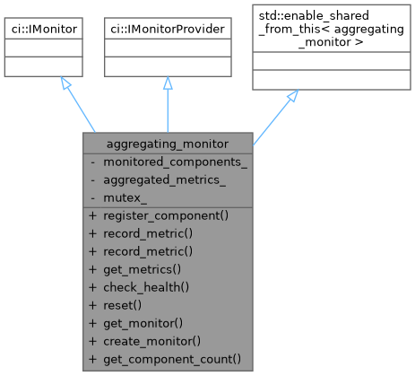
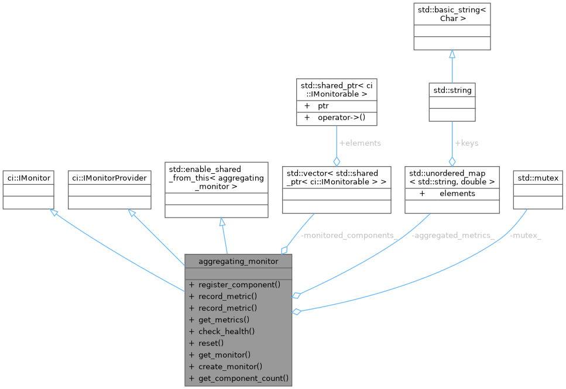
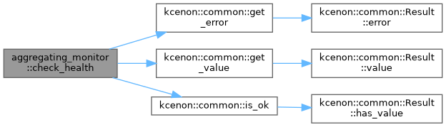
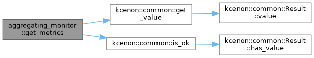
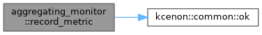
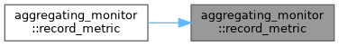
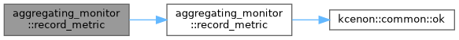
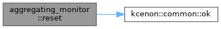

- Generated by
 1.12.0
1.12.0
|
Logger System 0.1.3
High-performance C++20 thread-safe logging system with asynchronous capabilities
|
Aggregating monitor that collects metrics from multiple sources. More...


Public Member Functions | |
| void | register_component (std::shared_ptr< ci::IMonitorable > component) |
| kcenon::common::VoidResult | record_metric (const std::string &name, double value) override |
| kcenon::common::VoidResult | record_metric (const std::string &name, double value, const std::unordered_map< std::string, std::string > &tags) override |
| kcenon::common::Result< ci::metrics_snapshot > | get_metrics () override |
| kcenon::common::Result< ci::health_check_result > | check_health () override |
| kcenon::common::VoidResult | reset () override |
| std::shared_ptr< ci::IMonitor > | get_monitor () override |
| std::shared_ptr< ci::IMonitor > | create_monitor (const std::string &name) override |
| size_t | get_component_count () const |
Private Attributes | |
| std::vector< std::shared_ptr< ci::IMonitorable > > | monitored_components_ |
| std::unordered_map< std::string, double > | aggregated_metrics_ |
| std::mutex | mutex_ |
Aggregating monitor that collects metrics from multiple sources.
Definition at line 32 of file monitoring_integration_example.cpp.
|
inlineoverride |
Definition at line 97 of file monitoring_integration_example.cpp.
References kcenon::common::get_error(), kcenon::common::get_value(), kcenon::common::is_ok(), monitored_components_, and mutex_.

|
inlineoverride |
Definition at line 146 of file monitoring_integration_example.cpp.
|
inline |
Definition at line 151 of file monitoring_integration_example.cpp.
References monitored_components_, and mutex_.
|
inlineoverride |
Definition at line 69 of file monitoring_integration_example.cpp.
References aggregated_metrics_, kcenon::common::get_value(), kcenon::common::is_ok(), monitored_components_, and mutex_.

|
inlineoverride |
Definition at line 142 of file monitoring_integration_example.cpp.
|
inlineoverride |
Definition at line 48 of file monitoring_integration_example.cpp.
References aggregated_metrics_, mutex_, and kcenon::common::ok().
Referenced by record_metric().


|
inlineoverride |
Definition at line 57 of file monitoring_integration_example.cpp.
References record_metric().

|
inline |
Definition at line 41 of file monitoring_integration_example.cpp.
References monitored_components_, and mutex_.
|
inlineoverride |
Definition at line 135 of file monitoring_integration_example.cpp.
References aggregated_metrics_, mutex_, and kcenon::common::ok().

|
private |
Definition at line 37 of file monitoring_integration_example.cpp.
Referenced by get_metrics(), record_metric(), and reset().
|
private |
Definition at line 36 of file monitoring_integration_example.cpp.
Referenced by check_health(), get_component_count(), get_metrics(), and register_component().
|
mutableprivate |
Definition at line 38 of file monitoring_integration_example.cpp.
Referenced by check_health(), get_component_count(), get_metrics(), record_metric(), register_component(), and reset().